Module 4 — ViewApp Customizations | Pages 309-326
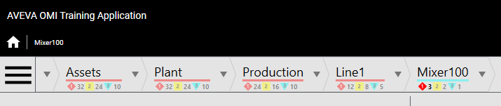
Lab 10 – Enhancing the ViewApp Layout
Lab 10 – Enhancing the ViewApp Layout
Introduction
In this lab, you will enhance the layout of the ViewApp in a number of ways.
You will add and configure a pane for a hamburger button at the top of the ViewApp, and assign
the HamburgerApp to it. The icon for the hamburger button is three horizontal lines. Clicking it
opens the slide-in pane on the left side of the ViewApp for navigation at runtime.
You will update the slide-in pane on the left of the layout so that when open, it will not hide the title
bar or the hamburger button at the top of the display.
You will enable the zoom and pan feature for a pane to allow zooming and panning content in the
pane at runtime.
You will configure pane dividers to be interactive to allow them to be moved at runtime.
Optional steps are also provided for adding a background image to the ViewApp.
Objectives
Upon completion of this lab, you will be able to:
Configure additional layout properties
Configure additional pane properties
Enable pan and zoom for panes
Configure pane dividers in a layout
Use the HamburgerApp
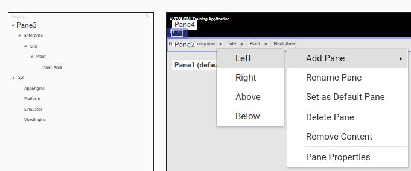
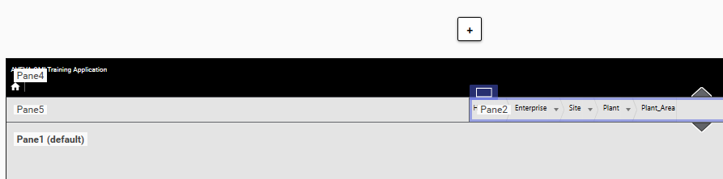
• New pane Pane5 positioned to the left of Pane2
• Pane2 with breadcrumb navigation (adjacent to Pane5)
• Pane1 (default) (bottom)
• Left pane list now includes Pane5]
Add Panes for HamburgerApp
In the following steps, you will edit the Main layout in the Layout Editor. You will add a pane for the
HamburgerButton at the top of the layout. You will configure it so that its height will not change if
the layout size changes in the running ViewApp.
1.
On the Graphics tab, in the Training \ Layouts toolset, double-click Main to open it in the
Layout Editor.
2.
In the layout preview area, select Pane2, which has NavBreadcrumbControl assigned.
3.
Right-click Pane2 and select Add Pane | Left.
A new pane named Pane5 is added to the left of Pane2.
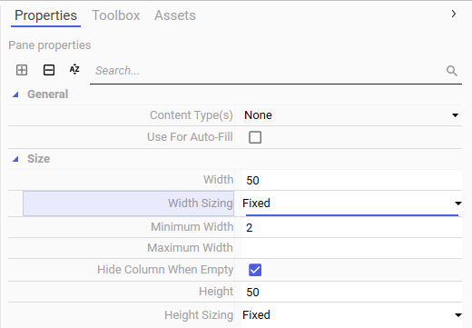
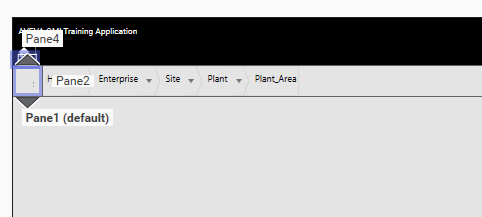
Lab 10 – Enhancing the ViewApp Layout
4.
Select Pane5, and on the Properties tab, configure properties as follows:
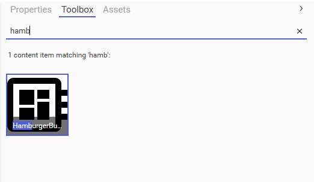
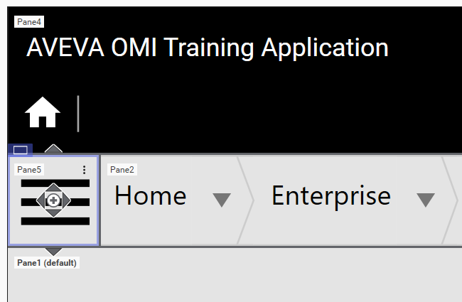
5.
On the Toolbox tab, enter a search string to find the HamburgerButton and select it.
6.
Drag the HamburgerButton to Pane5.
Because Pane5 is very small, you may want to zoom the layout preview display to make it
easier to assign content to the pane.
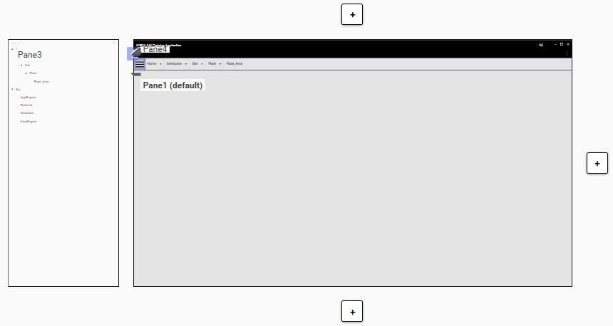
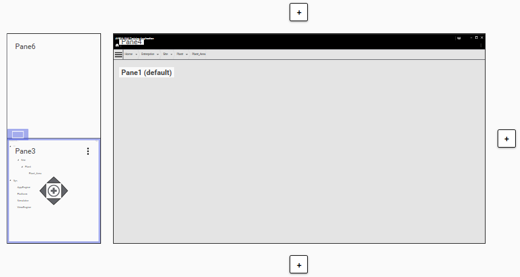
• Modified left pane structure:
• Top-left: New pane labeled "Pane6"
• Bottom-left: Original pane "Pane3" (blue-outlined, selected)
• Small window/control with "Open" and grid icon (button/menu interaction)
• Right pane: "Pane1 (default)" (unchanged)
• [+] buttons remain consistent]
Lab 10 – Enhancing the ViewApp Layout
If you zoomed the layout preview display to make it easier to assign content to Pane5, you
may want to reset the display. For example, you can use the Zoom to Fit option to show the
whole layout in the preview display.
The layout should look as follows:
Customize the Left Slide-In Pane
In the following steps, you will add a new pane to the top of the left slide-in pane. You will
customize the new pane to have a transparent background, so that when the slide-in pane is open,
the TitleBarControl and HamburgerButton will still be visible.
7.
Select Pane3 and add a new pane above it.
A new pane named Pane6 is added above Pane3.
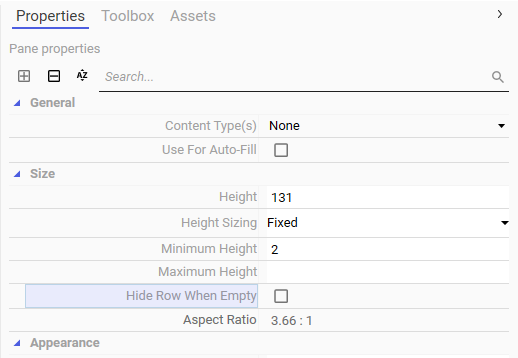
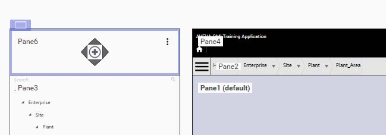
8.
Select Pane6, and on the Properties tab, configure properties as follows:
Pane6 resizes in the preview area.
Notice that the bottom line of Pane6 is aligned with the bottom lines of Pane5 and Pane2.
Size \ Height:
131 (same as the height of Pane2 plus Pane4 and a
divider between the panes)
Size \ Height Sizing:
Fixed
Size \ Hide Row When Empty:
unchecked
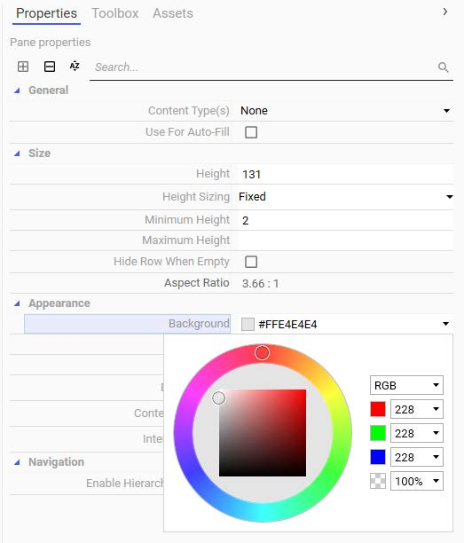
Lab 10 – Enhancing the ViewApp Layout
9.
With Pane6 selected, on the Properties tab, click the down-arrow next to the Appearance \
Background property to display the color picker.
Notice that the color picker shows RGBA color code values, where R is red, G is green, B is
blue, and A is alpha. Alpha controls the transparency or opacity of the other three colors.
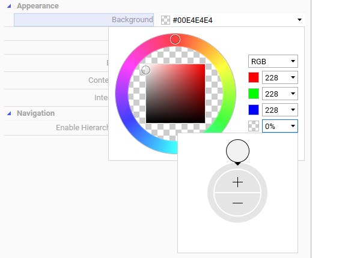
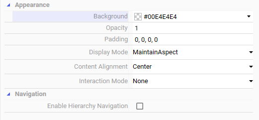
10. Change the Alpha field on the right to a value of 0.
This will make the pane background transparent.
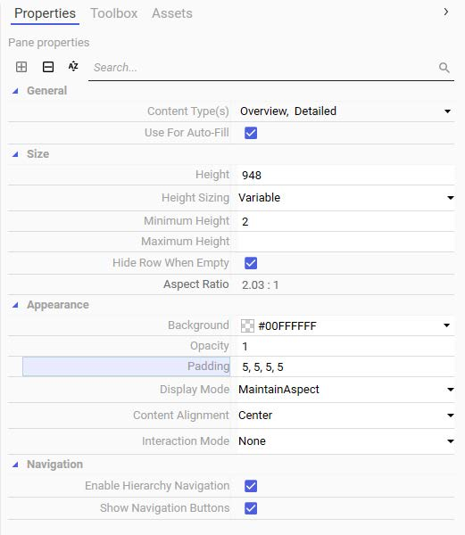
Lab 10 – Enhancing the ViewApp Layout
Add Padding to a Pane
Now you will configure padding for a pane, which will add a small number of blank-space pixels
between the pane border and content within the pane.
11. In the preview area, select Pane1.
12. On the Properties tab, change the Appearance \ Padding property to 5,5,5,5.
13. Save and close the Main layout, and check it in.
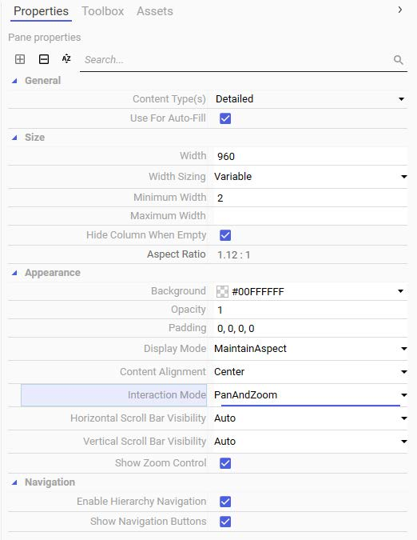
Change Other Pane Properties
Next, you will customize panes in Asset_Layout. You will enable the pan and zoom controls and
configure the divider between panes to be movable at runtime.
14. On the Graphics tab, in the Training \ Layouts toolset, double-click Asset_Layout to open it
in the Layout Editor.
15. Ensure Pane1 is selected, and configure its Appearance \ Interaction Mode property to
PanAndZoom.
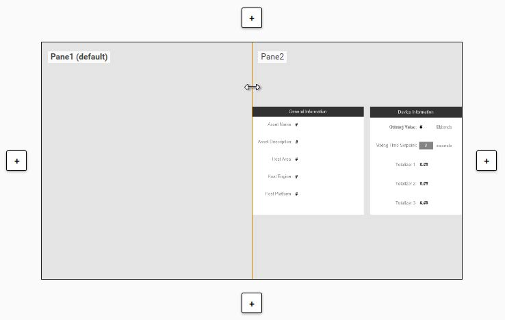
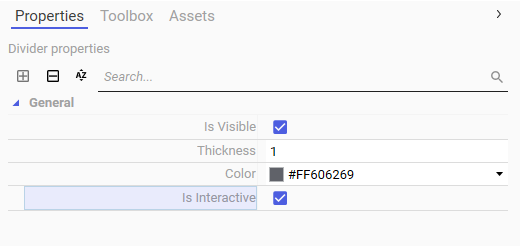
Lab 10 – Enhancing the ViewApp Layout
16. Click the pane divider between Pane1 and Pane2, but do not move the divider.
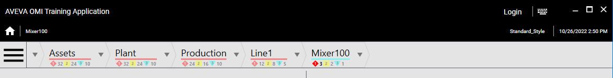
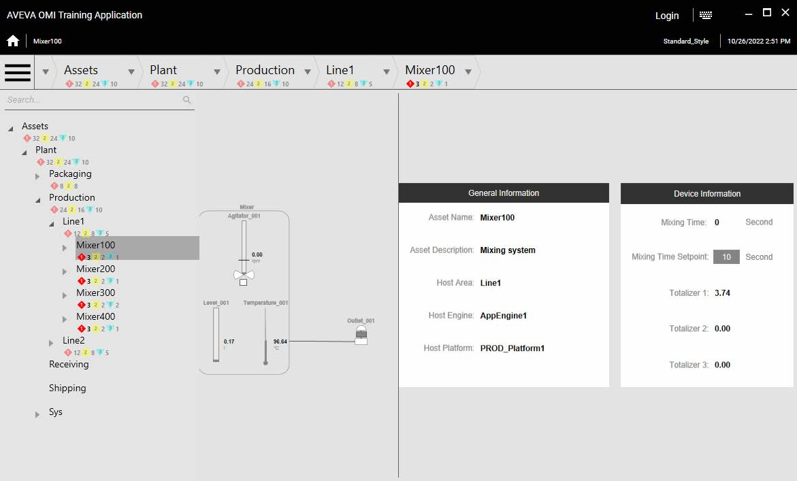
Test the ViewApp in a Preview Session
Now you will test your ViewApp in the preview session.
19. Switch to the ViewApp preview session and ensure you are navigated to Mixer100.
Notice that the appearance is different. A hamburger button appears to the left of the
NavBreadcrumbControl at the top of the ViewApp.
20. Click the hamburger button.
The left slide-in pane appears.
The top pane in the slide-in pane is transparent, so it does not block the title bar or the
hamburger button when opened.
21. Click the hamburger button to close the left slide-in pane.
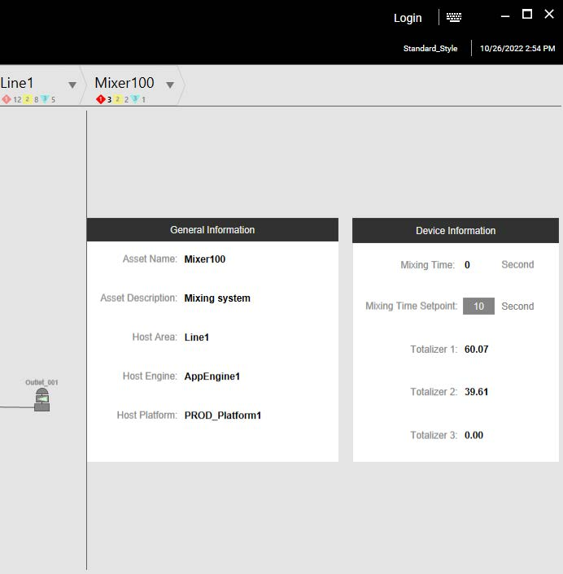
Lab 10 – Enhancing the ViewApp Layout
22. In the display, notice the padding around the content.
The padding appears because Pane1 in the Main layout is configured with 5 pixels of padding
at the top, bottom, left, and right.
For example, notice the padding to the right of the faceplate graphic.
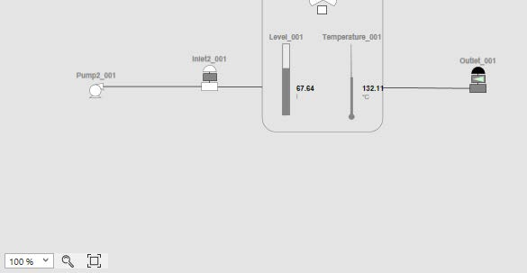
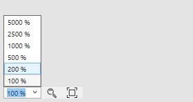
23. In the pane on the left with the mixer graphic, notice the pan and zoom controls at the bottom
of the pane.
These appear because the pane is configured with pan and zoom enabled.
24. Click the zoom percentage drop-down list and choose 200%.
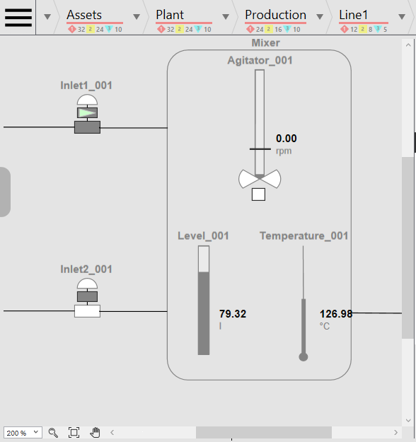
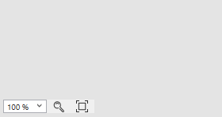
Lab 10 – Enhancing the ViewApp Layout
The display zooms in and scroll bars appear on the bottom and right sides of the pane.
Also notice that the Pan Mode control appears with the zoom controls.
25. Click Pan Mode to enable the pane with pan interaction mode.
26. Use your mouse to click and drag the displayed content within the pane.
Notice that the scroll bars move along as you pan.
27. Click Pan Mode again to exit pan interaction mode.
28. Click Zoom To 100% to reset the pane display.
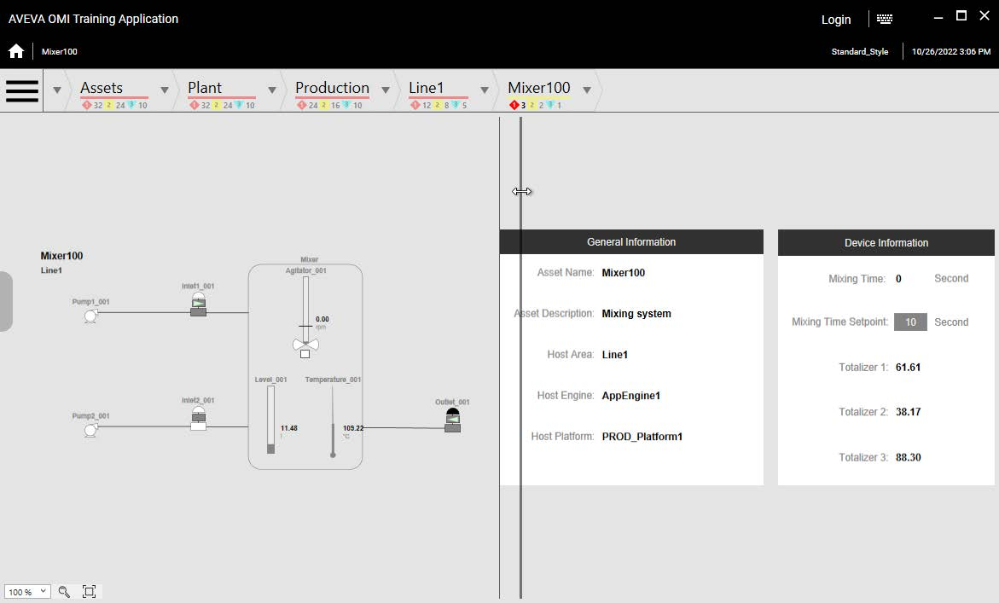
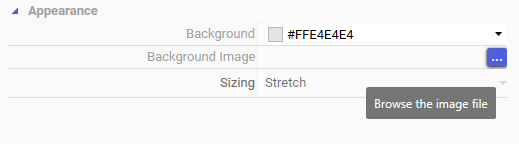
29. Move the divider between the pane with the mixer graphic and the pane with the faceplate
graphic to the right and left.
The divider moves because it is configured with interaction mode enabled.
30. Resize the entire ViewApp window.
Notice that the top panes do not change height and the pane with the hamburger button does
not change width.
31. When you are finished testing, minimize the ViewApp preview session.
[Optional Steps] Add Background Image to a Layout
This section provides optional steps for adding a background image to the Main layout.
32. On the Graphics tab, in the Training \ Layouts toolset, double-click Main to open it in the
Layout Editor.
33. In the preview area, click outside the panes to select the whole layout and display layout
properties on the Properties tab.
34. On the Properties tab, for the Appearance \ Background Image property, click the ellipsis
button to browse for an image file.
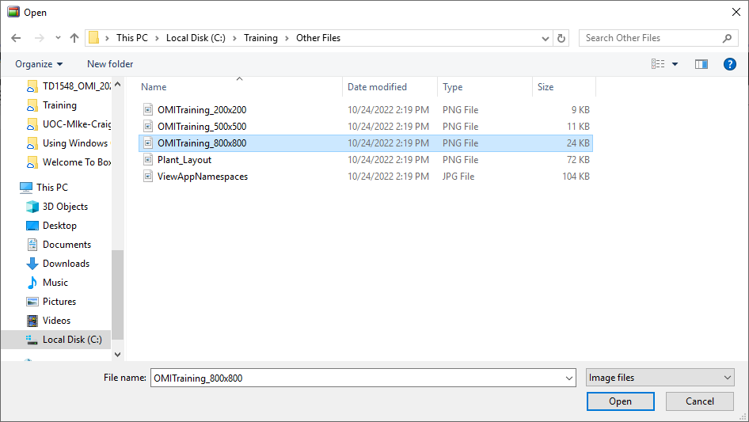
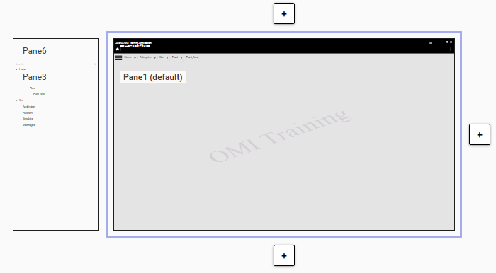
Lab 10 – Enhancing the ViewApp Layout
The Open dialog box appears.
Several example images are provided in the C:\Training\Other Files folder.
35. Navigate to the C:\Training\Other Files folder, select OMITraining_800x800.png, and then
click Open.
This file contains a small image, which can be used as a watermark for the training application.
The image appears in the preview area.
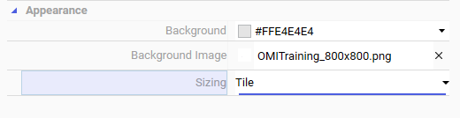
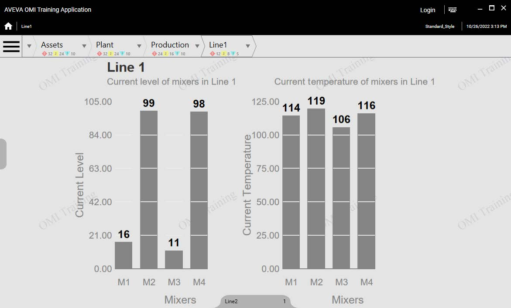
36. On the Properties tab, configure the Appearance \ Sizing property as Tile.
Review the lab steps above and list the main configuration actions you completed.
Consider the dependencies between steps and how skipping one might affect the outcome.